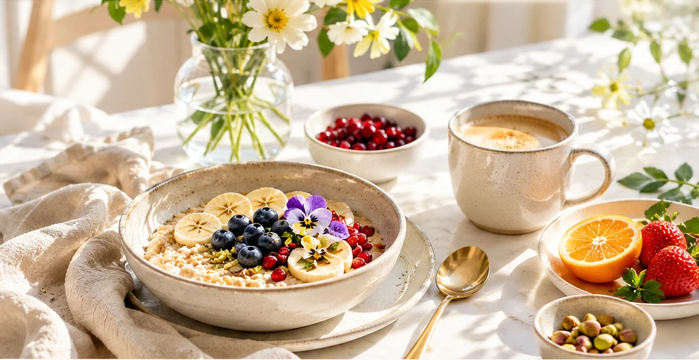
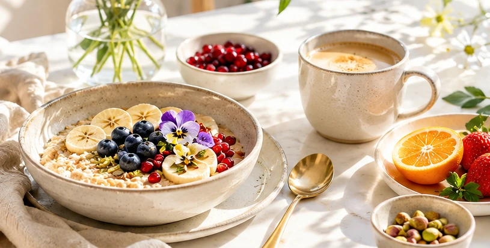

A little sunlight.
A little sattva.
The ease of a Sunday morning, gathered around a sunlit table. Thoughtful vegetarian food, made simply, to bring a little beauty to every day.
A Sunday feeling, every day.
Fresh ingredients. Gentle flavors. Good company.

Eat beautifully.
THE SUNDAY TABLE / COLLECTIONS
Wholesome food for every moment.
From first light to a quiet cup of evening chai. Consider this your invitation to savor the small things.
THE RECIPE JOURNAL ✳ ISSUE NO. 01
From our kitchen, to yours.
Little plates, generous bowls, and nourishing bites. All vegetarian. All without onion or garlic.
TO MAKE
Nothing in the bowl just yet.
Try a different search or look through all the recipes.

THE BEAUTY OF THE EVERYDAYOUR LITTLE PHILOSOPHY
“Simple food. Beautiful living.
Sattva is a Sanskrit word associated with clarity, harmony, and balance. In the kitchen, it invites us to choose fresh foods, cook thoughtfully, and enjoy what is on our plate.
Our recipes draw on Indian sattvic cooking traditions: vegetarian ingredients, gentle seasoning, and no onion or garlic. Traditions differ, so think of this as a welcoming starting point, not a rigid rulebook.
Find something lovely to makeA LITTLE SUNDAY RITUAL
A little inspiration for today.
Can't decide? Let the kitchen surprise you with a gentle breakfast, a satisfying meal, and something small to snack on.